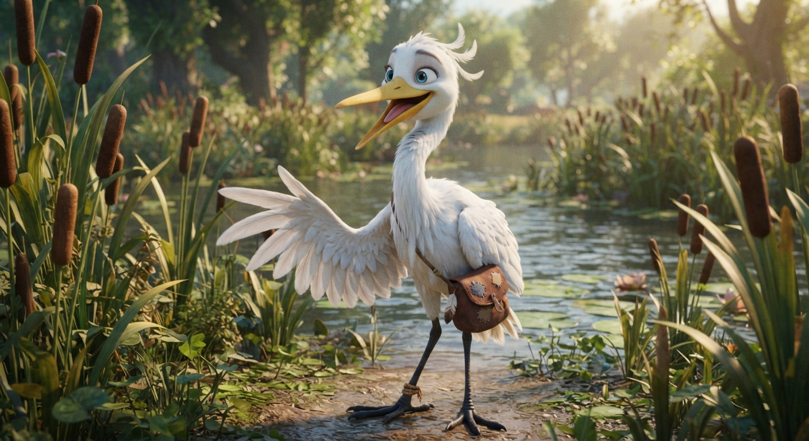
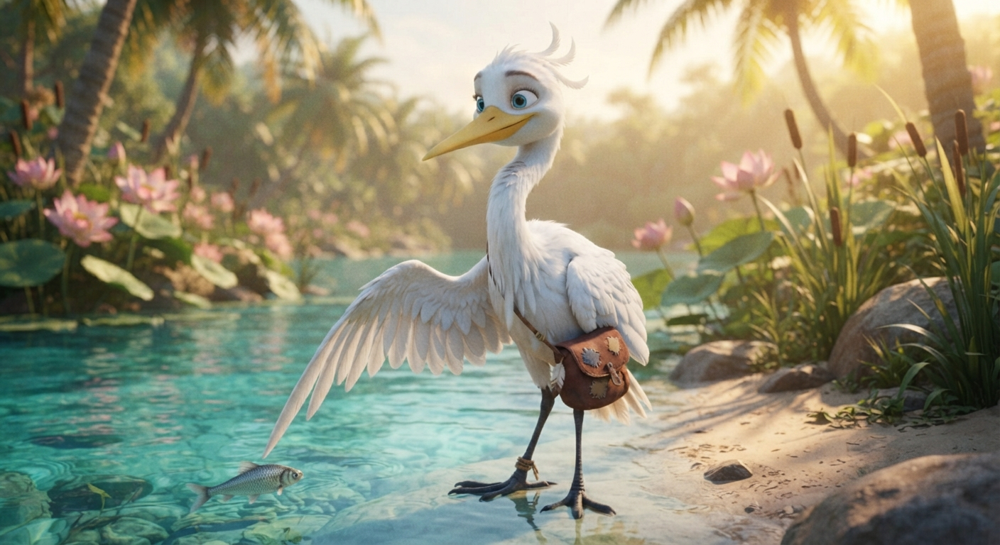
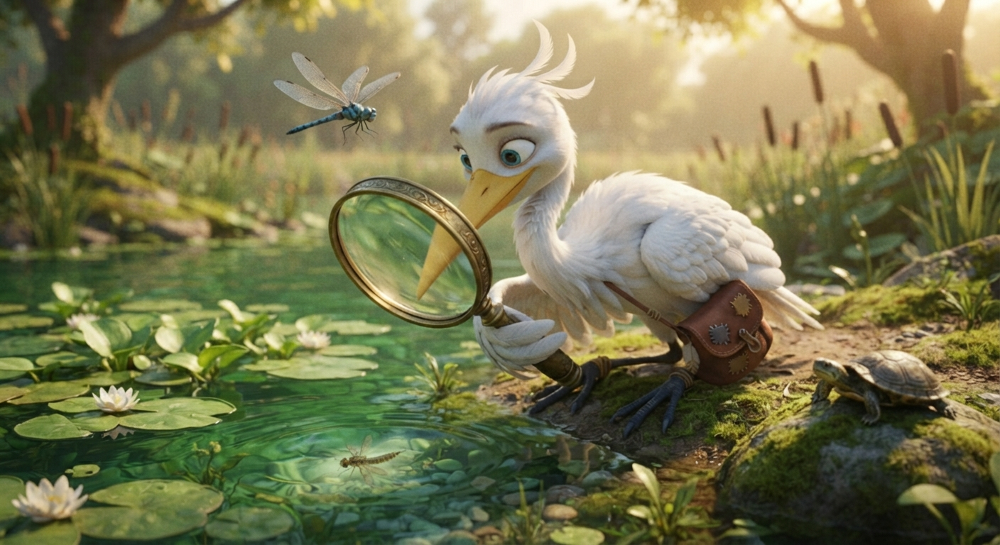
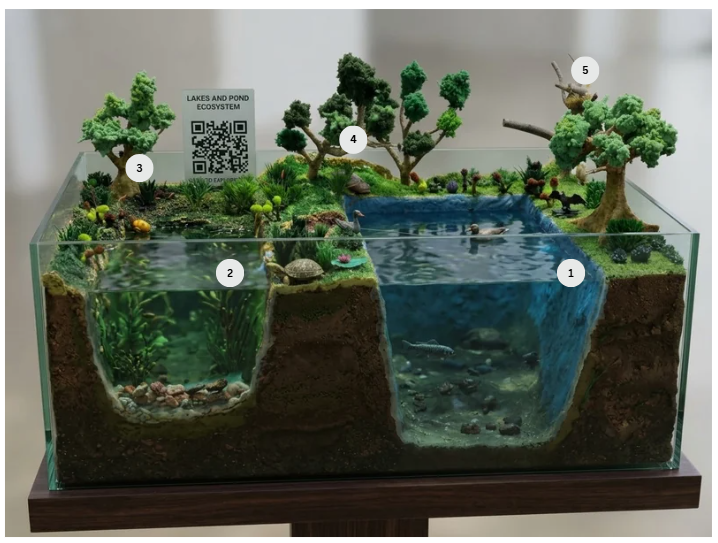
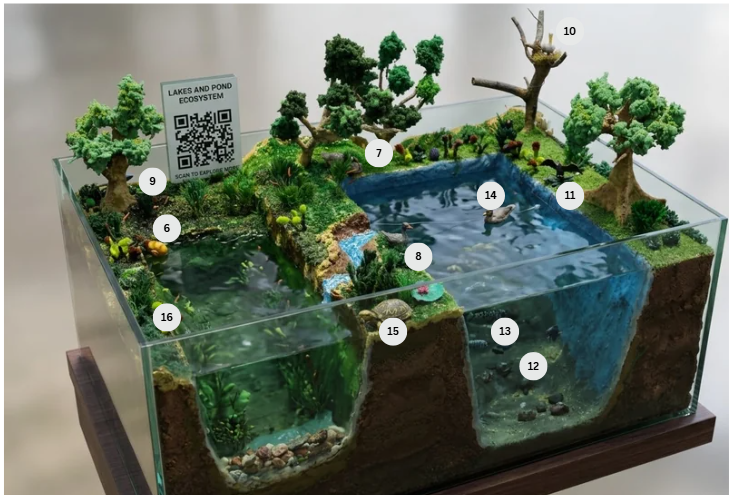

1. Connected Freshwater Ecosystems
This ecosystem model compares two interconnected freshwater habitats in Sri Lanka: a relatively clean, healthy lake (lentic ecosystem) and a pond undergoing eutrophication.
Water bodies do not function in isolation—they are linked through water movement, nutrient cycling, organisms, and energy flow, yet they can still show noticeably different ecological conditions, biodiversity, and water quality.

2. The Lentic Lake Ecosystem
A lake is a relatively large, standing freshwater (lentic) ecosystem with little or no continuous directional water flow. Sunlight penetrates upper layers for photosynthesis, water temperature can vary with depth, and seasonal rainfall, evaporation, and water extraction shape water levels and life activity.

3. The Eutrophied Pond Ecosystem

A pond is a smaller, shallower freshwater ecosystem (natural or constructed) where sunlight can often reach near or to the bottom. Eutrophication occurs when excess nutrients—especially nitrogen and phosphorus—enter via agricultural fertilizers, domestic sewage/wastewater, phosphate detergents, animal waste, decomposing organic matter, or surface runoff.
Rapid algal/phytoplankton growth shades submerged plants, and when algae and plants die, decomposer bacteria break them down and consume dissolved oxygen—potentially causing fish mortality, lower biodiversity, and ecological imbalance.
4. Numbered Views of Our Physical Model (1–16)
Here are our two numbered model views showing the connected lake, pond, trees, and wildlife. Click any number button below to jump to and highlight its detailed gallery card!


5. Detailed Photo Gallery & Species Guide (1–16)
Drop your photos into the same folder as model_01.jpg through model_16.jpg—each card below pairs a photo slot with detailed ecological notes.
6. Lake vs. Pond Comparison & 5-Question Quiz
| Feature | Clean Lake | Eutrophied Pond |
|---|---|---|
| Water Quality | Relatively good | Deteriorated or nutrient-enriched |
| Nutrient Levels | Relatively balanced | Excess nitrogen and phosphorus |
| Algal Growth & Oxygen | Generally controlled; sufficient dissolved oxygen | May experience algal blooms; dissolved oxygen can drop |
| Vegetation, Biodiversity & Food Webs | Balanced plant community; diverse & balanced food webs | Excessive growth possible; biodiversity & food webs may be disrupted under severe eutrophication |